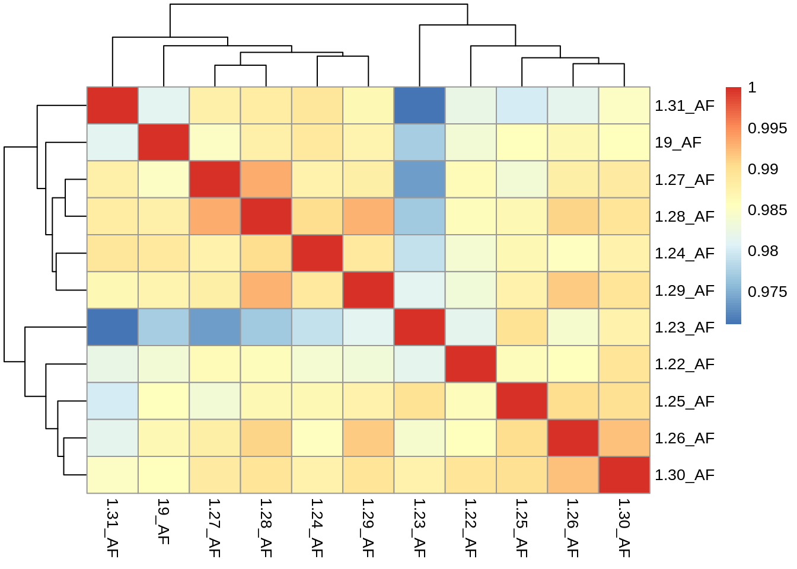
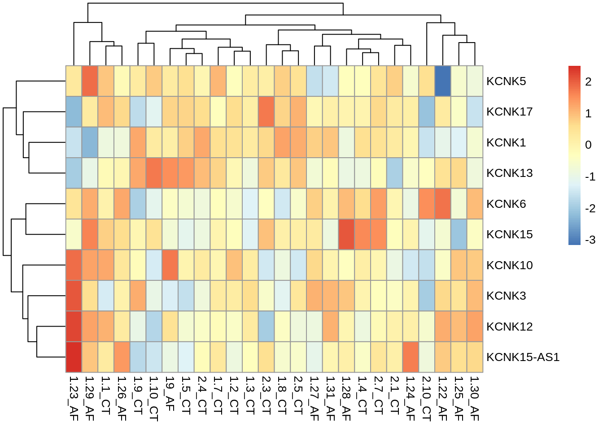

Cluster.identification
Jan Lanzer
7/27/2021
Last updated: 2021-08-03
Checks: 7 0
Knit directory: SFB_arrythmia/
This reproducible R Markdown analysis was created with workflowr (version 1.6.2). The Checks tab describes the reproducibility checks that were applied when the results were created. The Past versions tab lists the development history.
Great! Since the R Markdown file has been committed to the Git repository, you know the exact version of the code that produced these results.
Great job! The global environment was empty. Objects defined in the global environment can affect the analysis in your R Markdown file in unknown ways. For reproduciblity it’s best to always run the code in an empty environment.
The command set.seed(20210720) was run prior to running the code in the R Markdown file. Setting a seed ensures that any results that rely on randomness, e.g. subsampling or permutations, are reproducible.
Great job! Recording the operating system, R version, and package versions is critical for reproducibility.
Nice! There were no cached chunks for this analysis, so you can be confident that you successfully produced the results during this run.
Great job! Using relative paths to the files within your workflowr project makes it easier to run your code on other machines.
Great! You are using Git for version control. Tracking code development and connecting the code version to the results is critical for reproducibility.
The results in this page were generated with repository version 9fc2568. See the Past versions tab to see a history of the changes made to the R Markdown and HTML files.
Note that you need to be careful to ensure that all relevant files for the analysis have been committed to Git prior to generating the results (you can use wflow_publish or wflow_git_commit). workflowr only checks the R Markdown file, but you know if there are other scripts or data files that it depends on. Below is the status of the Git repository when the results were generated:
Ignored files:
Ignored: .Rhistory
Ignored: .Rproj.user/
Ignored: analysis/figure/
Ignored: data/data.limma.rds
Ignored: data/data.limma_filt.rds
Ignored: data/gene_id_symbol_dictionary_July2021.rds
Ignored: data/raw.combined.rds
Untracked files:
Untracked: analysis/normalize.R
Untracked: analysis/normalize_test.R
Untracked: analysis/process.R
Untracked: analysis/utils_preprocess.R
Untracked: data/genes of interest 2.txt
Untracked: data/genes_felix.csv
Untracked: data/raw/
Untracked: omnipathr-log/
Untracked: output/DEA_AF1_AF2.csv
Untracked: output/ETV_regs.xls
Untracked: output/KCNK3_potentialTFs.csv
Untracked: output/PC1_loadings_outlier.csv
Unstaged changes:
Modified: analysis/funcomics.Rmd
Modified: analysis/funcomics_filtered.Rmd
Note that any generated files, e.g. HTML, png, CSS, etc., are not included in this status report because it is ok for generated content to have uncommitted changes.
These are the previous versions of the repository in which changes were made to the R Markdown (analysis/cluster.Rmd) and HTML (docs/cluster.html) files. If you’ve configured a remote Git repository (see ?wflow_git_remote), click on the hyperlinks in the table below to view the files as they were in that past version.
| File | Version | Author | Date | Message |
|---|---|---|---|---|
| Rmd | 9fc2568 | JanLanzer | 2021-08-03 | wflow_publish(“analysis/cluster.Rmd”) |
| html | 787dca5 | JanLanzer | 2021-07-29 | Build site. |
| Rmd | df335af | JanLanzer | 2021-07-29 | wflow_publish(“analysis/cluster.Rmd”) |
| html | 4bfadb4 | JanLanzer | 2021-07-29 | Build site. |
| Rmd | 55da40a | JanLanzer | 2021-07-29 | wflow_publish(“analysis/cluster.Rmd”) |
patient distance and filtering of outliers
library(lsa)
#use cosine similarity on all GEX, all samples:
voom_count= data.all$GEX$voom_count
ds. = cosine(voom_count)
pheatmap(ds.)
| Version | Author | Date |
|---|---|---|
| 4bfadb4 | JanLanzer | 2021-07-29 |
#plot clustering on all GEX, outliers removed:
voom_count= data.filt$GEX$voom_count
ds. = cosine(voom_count)
pheatmap(ds.)
| Version | Author | Date |
|---|---|---|
| 4bfadb4 | JanLanzer | 2021-07-29 |
af.patients= data.filt$target %>% filter(group== "AF") %>% pull(sampleID)
ds. = cosine(voom_count[,af.patients])
pheatmap(ds.)
# #eucledian:
# ds. = dist(t(voom_count))
# pheatmap(ds.)
# ds.Find cluster based on gene sets
1 use prior knowldege gene set 2 use NABA (fibrosis)
#load gene set with AF prior knowledge:
genes_felix = read.csv("data/genes_felix.csv")[,1]
prior.k= enframe(genes_felix) %>%
mutate(mor = 1, likelihood= 1, gene.set= "prior")
#load NABA
processNABA = function(filepath = "/home/jan/R-projects/sc-exploration/data/NABAgsets.xls") {
con = file(filepath, "r")
naba_gsets = list()
while ( TRUE ) {
line = readLines(con, n = 1)
if ( length(line) == 0 ) {
break
}
split_line = unlist(strsplit(line,split="\t"))
naba_gsets[[split_line[1]]] = split_line[3:length(split_line)]
}
close(con)
return(naba_gsets)
}
naba_gsets= processNABA()
x = map(names(naba_gsets) , function(y){
enframe(naba_gsets[[y]]) %>% mutate(gene.set= y)
})
naba_gsets2= do.call(rbind, x) %>%
mutate(mor = 1, likelihood= 1)
all_genesets= rbind(naba_gsets2, prior.k)
#enrich_
statistics = c("gsva", "scira")
.R= decouple(data.filt$GEX$voom_count, network = all_genesets, .source = gene.set, .target = value, statistics = statistics, include_time = F) Estimating GSVA scores for 11 gene sets.
Estimating ECDFs with Gaussian kernels
|
| | 0%
|
|====== | 9%
|
|============= | 18%
|
|=================== | 27%
|
|========================= | 36%
|
|================================ | 45%
|
|====================================== | 55%
|
|============================================= | 64%
|
|=================================================== | 73%
|
|========================================================= | 82%
|
|================================================================ | 91%
|
|======================================================================| 100%#plot contrast AF-CT
.R %>%
left_join(data.all$target %>% rename(condition= sampleID)) %>%
ggplot(.,aes(x=tf, y= score, fill = group))+
facet_grid(rows= "statistic")+
geom_boxplot()+
theme(axis.text.x = element_text(angle= 60, hjust= 1
))
| Version | Author | Date |
|---|---|---|
| 4bfadb4 | JanLanzer | 2021-07-29 |
# Identifying AF clusters with NABA scores
map(statistics, function(x){
AF.NABA= .R %>%
filter(statistic== x)%>%
left_join(data.all$target %>% rename(condition= sampleID)) %>%
filter(group == "AF") %>%
select(condition, score, tf) %>%
pivot_wider( names_from= condition, values_from = score) %>% column_to_rownames("tf")
pheatmap(AF.NABA)
})
| Version | Author | Date |
|---|---|---|
| 4bfadb4 | JanLanzer | 2021-07-29 |
[[1]]
[[2]]samples 1.28, 1-29, 1.26 and 1.27 show high fibrosis and low gene expression of the submitted prior
now we will compare actual gene expression values for the genes of interest
AF.patients= data.filt$target %>% filter(group== "AF") %>% pull(sampleID)
all.patients=data.filt$target$sampleID
cal_z_score <- function(x){
(x - mean(x)) / sd(x)
}
plot.heatmap.for.genes= function(gene, patients){
x= voom_count[grepl(gene, rownames(voom_count)),patients]
data_subset_norm <- t(apply(x, 1, cal_z_score))
pheatmap(data_subset_norm)
pheatmap(x)
}
plot.heatmap.for.genes("KCNK", all.patients)
| Version | Author | Date |
|---|---|---|
| 4bfadb4 | JanLanzer | 2021-07-29 |
plot.heatmap.for.genes("KCNK", AF.patients)
plot.heatmap.for.genes("ETV", all.patients)plot.heatmap.for.genes("ETV", AF.patients)cluster AF patients based on TF activity
data= data.filt
target= data$target
data(dorothea_hs, package = "dorothea")
regulons <- dorothea_hs %>%
dplyr::filter(confidence %in% c("A", "B","C"))
# some ETV TFs are low confidence. we add them manually to the selection
dorothea_hs %>% filter(grepl("ETV", tf)) %>% distinct(tf, confidence)# A tibble: 7 x 2
tf confidence
<chr> <chr>
1 ETV1 C
2 ETV2 E
3 ETV3 E
4 ETV4 A
5 ETV5 E
6 ETV6 D
7 ETV7 E regulons.extended = rbind(regulons, dorothea_hs %>% filter(grepl("ETV", tf),
!confidence %in% c("A", "B","C"))
) %>% mutate(label= paste0(tf,"_", confidence)) %>%
select(-tf)%>% rename(tf= label)
#scale(data$GEX$voom_count,center = T, scale = T)
regulons.extended = rbind(regulons, dorothea_hs %>% filter(grepl("ETV", tf),
!confidence %in% c("A", "B","C"))
) %>% mutate(likelihood=1)
#### save regulons for inspection:
ETV_regulons=regulons.extended %>% filter(grepl("ETV", tf))
ETV_regilons_list= lapply(unique(ETV_regulons$tf), function(x){ETV_regulons %>% filter(tf == x)})
names(ETV_regilons_list)= unique(ETV_regulons$tf)
library(XML)
WriteXLS::WriteXLS(ETV_regilons_list, ExcelFileName = "output//ETV_regs.xls")
# now check kcnk3
dorothea_hs %>% filter(target == "KCNK3") %>% write.csv(., file ="output/KCNK3_potentialTFs.csv")
##choose mehtod
meth= c("scira", "gsva")
# perform enrichment:
dec.res= decouple(scale(data$GEX$voom_count,center = T, scale = T),
network = regulons.extended,
statistics = meth,
.source =tf,
.target = target,
include_time = F)Estimating GSVA scores for 297 gene sets.
Estimating ECDFs with Gaussian kernels
|
| | 0%
|
| | 1%
|
|= | 1%
|
|= | 2%
|
|== | 2%
|
|== | 3%
|
|=== | 4%
|
|=== | 5%
|
|==== | 5%
|
|==== | 6%
|
|===== | 7%
|
|===== | 8%
|
|====== | 8%
|
|====== | 9%
|
|======= | 9%
|
|======= | 10%
|
|======== | 11%
|
|======== | 12%
|
|========= | 12%
|
|========= | 13%
|
|========== | 14%
|
|========== | 15%
|
|=========== | 15%
|
|=========== | 16%
|
|============ | 16%
|
|============ | 17%
|
|============ | 18%
|
|============= | 18%
|
|============= | 19%
|
|============== | 20%
|
|============== | 21%
|
|=============== | 21%
|
|=============== | 22%
|
|================ | 22%
|
|================ | 23%
|
|================ | 24%
|
|================= | 24%
|
|================= | 25%
|
|================== | 25%
|
|================== | 26%
|
|=================== | 27%
|
|=================== | 28%
|
|==================== | 28%
|
|==================== | 29%
|
|===================== | 29%
|
|===================== | 30%
|
|===================== | 31%
|
|====================== | 31%
|
|====================== | 32%
|
|======================= | 32%
|
|======================= | 33%
|
|======================== | 34%
|
|======================== | 35%
|
|========================= | 35%
|
|========================= | 36%
|
|========================== | 37%
|
|========================== | 38%
|
|=========================== | 38%
|
|=========================== | 39%
|
|============================ | 39%
|
|============================ | 40%
|
|============================= | 41%
|
|============================= | 42%
|
|============================== | 42%
|
|============================== | 43%
|
|=============================== | 44%
|
|=============================== | 45%
|
|================================ | 45%
|
|================================ | 46%
|
|================================= | 46%
|
|================================= | 47%
|
|================================= | 48%
|
|================================== | 48%
|
|================================== | 49%
|
|=================================== | 49%
|
|=================================== | 50%
|
|=================================== | 51%
|
|==================================== | 51%
|
|==================================== | 52%
|
|===================================== | 52%
|
|===================================== | 53%
|
|===================================== | 54%
|
|====================================== | 54%
|
|====================================== | 55%
|
|======================================= | 55%
|
|======================================= | 56%
|
|======================================== | 57%
|
|======================================== | 58%
|
|========================================= | 58%
|
|========================================= | 59%
|
|========================================== | 60%
|
|========================================== | 61%
|
|=========================================== | 61%
|
|=========================================== | 62%
|
|============================================ | 62%
|
|============================================ | 63%
|
|============================================= | 64%
|
|============================================= | 65%
|
|============================================== | 65%
|
|============================================== | 66%
|
|=============================================== | 67%
|
|=============================================== | 68%
|
|================================================ | 68%
|
|================================================ | 69%
|
|================================================= | 69%
|
|================================================= | 70%
|
|================================================= | 71%
|
|================================================== | 71%
|
|================================================== | 72%
|
|=================================================== | 72%
|
|=================================================== | 73%
|
|==================================================== | 74%
|
|==================================================== | 75%
|
|===================================================== | 75%
|
|===================================================== | 76%
|
|====================================================== | 76%
|
|====================================================== | 77%
|
|====================================================== | 78%
|
|======================================================= | 78%
|
|======================================================= | 79%
|
|======================================================== | 79%
|
|======================================================== | 80%
|
|========================================================= | 81%
|
|========================================================= | 82%
|
|========================================================== | 82%
|
|========================================================== | 83%
|
|========================================================== | 84%
|
|=========================================================== | 84%
|
|=========================================================== | 85%
|
|============================================================ | 85%
|
|============================================================ | 86%
|
|============================================================= | 87%
|
|============================================================= | 88%
|
|============================================================== | 88%
|
|============================================================== | 89%
|
|=============================================================== | 90%
|
|=============================================================== | 91%
|
|================================================================ | 91%
|
|================================================================ | 92%
|
|================================================================= | 92%
|
|================================================================= | 93%
|
|================================================================== | 94%
|
|================================================================== | 95%
|
|=================================================================== | 95%
|
|=================================================================== | 96%
|
|==================================================================== | 97%
|
|==================================================================== | 98%
|
|===================================================================== | 98%
|
|===================================================================== | 99%
|
|======================================================================| 99%
|
|======================================================================| 100%# dec.res= decouple(data$GEX$voom_count, network = regulons.extended,statistics = c("gsva", "mean", "pscira", "scira", "viper"), .source =tf, .target = target )
map(c("gsva", "scira")[1], function(x){
dec.res.m = dec.res %>%
filter(statistic== x,
grepl("AF", condition))%>%
pivot_wider(id_cols= c(condition, score, tf), names_from = condition, values_from = score) %>%
as.data.frame() %>%
column_to_rownames("tf")%>% as.matrix
pheatmap(dec.res.m)
pheatmap(dec.res.m[grepl("ETV", rownames(dec.res.m)), ])
})
| Version | Author | Date |
|---|---|---|
| 4bfadb4 | JanLanzer | 2021-07-29 |
| Version | Author | Date |
|---|---|---|
| 4bfadb4 | JanLanzer | 2021-07-29 |
[[1]]Patients 1.28, 1-29, 1.26 and 1.27 show high ETV4, ETV6, and ETV7 activity. Same patients as in fibrosis analysis Careful, some ETV regulons are inferred and might be less accurate. Patient 19_AF is a bit inbetween
Next we will use these two patient groups of AF to test for clinical variables.
cluster.fib= c("1.28_AF", "1.29_AF", "1.26_AF","1.27_AF")
target= data.filt$target
target = target %>% filter(group =="AF") %>% mutate(cluster= ifelse(sampleID %in% cluster.fib, "fibrotic", "non.fibrotic"))
### For categorical data, a chi sqr test is performed om the cluster variable:
fact.target= target[,37:length(colnames(target))] %>% mutate_all(as.factor) %>% select(-cluster)
test.res= map(colnames(fact.target), function(x){
#print(x)
if(length(unique(target[[x]]))>1){
test.res= chisq.test(target[[x]], target$cluster)
#get.it= c(test.res$p.value, test.res$statistic)
return(test.res)
}
return(NULL)
})Warning in chisq.test(target[[x]], target$cluster): Chi-squared approximation
may be incorrect
Warning in chisq.test(target[[x]], target$cluster): Chi-squared approximation
may be incorrect
Warning in chisq.test(target[[x]], target$cluster): Chi-squared approximation
may be incorrect
Warning in chisq.test(target[[x]], target$cluster): Chi-squared approximation
may be incorrect
Warning in chisq.test(target[[x]], target$cluster): Chi-squared approximation
may be incorrect
Warning in chisq.test(target[[x]], target$cluster): Chi-squared approximation
may be incorrect
Warning in chisq.test(target[[x]], target$cluster): Chi-squared approximation
may be incorrect
Warning in chisq.test(target[[x]], target$cluster): Chi-squared approximation
may be incorrect
Warning in chisq.test(target[[x]], target$cluster): Chi-squared approximation
may be incorrect
Warning in chisq.test(target[[x]], target$cluster): Chi-squared approximation
may be incorrect
Warning in chisq.test(target[[x]], target$cluster): Chi-squared approximation
may be incorrect
Warning in chisq.test(target[[x]], target$cluster): Chi-squared approximation
may be incorrect
Warning in chisq.test(target[[x]], target$cluster): Chi-squared approximation
may be incorrect
Warning in chisq.test(target[[x]], target$cluster): Chi-squared approximation
may be incorrect
Warning in chisq.test(target[[x]], target$cluster): Chi-squared approximation
may be incorrect
Warning in chisq.test(target[[x]], target$cluster): Chi-squared approximation
may be incorrect
Warning in chisq.test(target[[x]], target$cluster): Chi-squared approximation
may be incorrect
Warning in chisq.test(target[[x]], target$cluster): Chi-squared approximation
may be incorrect
Warning in chisq.test(target[[x]], target$cluster): Chi-squared approximation
may be incorrect
Warning in chisq.test(target[[x]], target$cluster): Chi-squared approximation
may be incorrect
Warning in chisq.test(target[[x]], target$cluster): Chi-squared approximation
may be incorrect#test.res[[1]]$statistic
names(test.res) = colnames(fact.target)
test.res= do.call(rbind, test.res)
test.res= test.res%>%as.data.frame() %>% arrange(p.value) #%>% print(n=200)
#test.res= fisher.test(x= target$cluster, y= target$CABG)
print(test.res) statistic parameter p.value
Heartfailure 2.933333 3 0.4020185
Corononaryheartdisease 3.653571 3 0.3013838
Smoker 4.301786 2 0.1163802
Femalegender 0.1364087 1 0.7118776
AVR 0.1604167 1 0.6887732
Hyperlipidemia 0.1604167 1 0.6887732
ACEinhibitor 0.1604167 1 0.6887732
CABG 0.003507653 1 0.9527725
Myocardialinfarction 0.08839286 1 0.7662303
Antiplateletdrug 0.08839286 1 0.7662303
DOAC 0.08839286 1 0.7662303
PCI 5.336257e-31 1 1
Ca.antagonist 5.336257e-31 1 1
Type.IIdiabetes 0.3314732 1 0.5647929
Pulmonaryhypertension 2.753274 1 0.09705552
COPD 0 1 1
AT1antagonist 0 1 1
\\beta.blocker 1.667916e-31 1 1
Loopdiuretic 1.667916e-31 1 1
Marcumar 1.667916e-31 1 1
Statin 1.667916e-31 1 1
method
Heartfailure Pearson's Chi-squared test
Corononaryheartdisease Pearson's Chi-squared test
Smoker Pearson's Chi-squared test
Femalegender Pearson's Chi-squared test with Yates' continuity correction
AVR Pearson's Chi-squared test with Yates' continuity correction
Hyperlipidemia Pearson's Chi-squared test with Yates' continuity correction
ACEinhibitor Pearson's Chi-squared test with Yates' continuity correction
CABG Pearson's Chi-squared test with Yates' continuity correction
Myocardialinfarction Pearson's Chi-squared test with Yates' continuity correction
Antiplateletdrug Pearson's Chi-squared test with Yates' continuity correction
DOAC Pearson's Chi-squared test with Yates' continuity correction
PCI Pearson's Chi-squared test with Yates' continuity correction
Ca.antagonist Pearson's Chi-squared test with Yates' continuity correction
Type.IIdiabetes Pearson's Chi-squared test with Yates' continuity correction
Pulmonaryhypertension Pearson's Chi-squared test with Yates' continuity correction
COPD Pearson's Chi-squared test with Yates' continuity correction
AT1antagonist Pearson's Chi-squared test with Yates' continuity correction
\\beta.blocker Pearson's Chi-squared test with Yates' continuity correction
Loopdiuretic Pearson's Chi-squared test with Yates' continuity correction
Marcumar Pearson's Chi-squared test with Yates' continuity correction
Statin Pearson's Chi-squared test with Yates' continuity correction
data.name observed
Heartfailure target[[x]] and target$cluster 0, 0, 3, 1, 2, 1, 2, 2
Corononaryheartdisease target[[x]] and target$cluster 1, 1, 0, 2, 1, 0, 3, 3
Smoker target[[x]] and target$cluster 1, 3, 0, 4, 1, 2
Femalegender target[[x]] and target$cluster 4, 0, 5, 2
AVR target[[x]] and target$cluster 1, 3, 4, 3
Hyperlipidemia target[[x]] and target$cluster 1, 3, 4, 3
ACEinhibitor target[[x]] and target$cluster 3, 1, 3, 4
CABG target[[x]] and target$cluster 2, 2, 2, 5
Myocardialinfarction target[[x]] and target$cluster 3, 1, 7, 0
Antiplateletdrug target[[x]] and target$cluster 1, 3, 0, 7
DOAC target[[x]] and target$cluster 3, 1, 7, 0
PCI target[[x]] and target$cluster 4, 0, 6, 1
Ca.antagonist target[[x]] and target$cluster 4, 0, 6, 1
Type.IIdiabetes target[[x]] and target$cluster 2, 2, 6, 1
Pulmonaryhypertension target[[x]] and target$cluster 0, 4, 5, 2
COPD target[[x]] and target$cluster 3, 1, 5, 2
AT1antagonist target[[x]] and target$cluster 3, 1, 5, 2
\\beta.blocker target[[x]] and target$cluster 1, 3, 1, 6
Loopdiuretic target[[x]] and target$cluster 1, 3, 1, 6
Marcumar target[[x]] and target$cluster 3, 1, 6, 1
Statin target[[x]] and target$cluster 1, 3, 1, 6
expected
Heartfailure 0.7272727, 0.3636364, 1.8181818, 1.0909091, 1.2727273, 0.6363636, 3.1818182, 1.9090909
Corononaryheartdisease 0.7272727, 0.3636364, 1.0909091, 1.8181818, 1.2727273, 0.6363636, 1.9090909, 3.1818182
Smoker 1.8181818, 1.4545455, 0.7272727, 3.1818182, 2.5454545, 1.2727273
Femalegender 3.2727273, 0.7272727, 5.7272727, 1.2727273
AVR 1.818182, 2.181818, 3.181818, 3.818182
Hyperlipidemia 1.818182, 2.181818, 3.181818, 3.818182
ACEinhibitor 2.181818, 1.818182, 3.818182, 3.181818
CABG 1.454545, 2.545455, 2.545455, 4.454545
Myocardialinfarction 3.6363636, 0.3636364, 6.3636364, 0.6363636
Antiplateletdrug 0.3636364, 3.6363636, 0.6363636, 6.3636364
DOAC 3.6363636, 0.3636364, 6.3636364, 0.6363636
PCI 3.6363636, 0.3636364, 6.3636364, 0.6363636
Ca.antagonist 3.6363636, 0.3636364, 6.3636364, 0.6363636
Type.IIdiabetes 2.909091, 1.090909, 5.090909, 1.909091
Pulmonaryhypertension 1.818182, 2.181818, 3.181818, 3.818182
COPD 2.909091, 1.090909, 5.090909, 1.909091
AT1antagonist 2.909091, 1.090909, 5.090909, 1.909091
\\beta.blocker 0.7272727, 3.2727273, 1.2727273, 5.7272727
Loopdiuretic 0.7272727, 3.2727273, 1.2727273, 5.7272727
Marcumar 3.2727273, 0.7272727, 5.7272727, 1.2727273
Statin 0.7272727, 3.2727273, 1.2727273, 5.7272727
residuals
Heartfailure -0.85280287, -0.60302269, 0.87645982, -0.08703883, 0.64465837, 0.45584231, -0.66254135, 0.06579517
Corononaryheartdisease 0.3198011, 1.0552897, -1.0444659, 0.1348400, -0.2417469, -0.7977240, 0.7895420, -0.1019294
Smoker -0.6067799, 1.2814232, -0.8528029, 0.4586825, -0.9686649, 0.6446584
Femalegender 0.4020151, -0.8528029, -0.3038949, 0.6446584
AVR -0.6067799, 0.5539117, 0.4586825, -0.4187179
Hyperlipidemia -0.6067799, 0.5539117, 0.4586825, -0.4187179
ACEinhibitor 0.5539117, -0.6067799, -0.4187179, 0.4586825
CABG 0.4522670, -0.3418817, -0.3418817, 0.2584383
Myocardialinfarction -0.3337119, 1.0552897, 0.2522625, -0.7977240
Antiplateletdrug 1.0552897, -0.3337119, -0.7977240, 0.2522625
DOAC -0.3337119, 1.0552897, 0.2522625, -0.7977240
PCI 0.1906925, -0.6030227, -0.1441500, 0.4558423
Ca.antagonist 0.1906925, -0.6030227, -0.1441500, 0.4558423
Type.IIdiabetes -0.5330018, 0.8703883, 0.4029115, -0.6579517
Pulmonaryhypertension -1.3483997, 1.2309149, 1.0192944, -0.9304842
COPD 0.05330018, -0.08703883, -0.04029115, 0.06579517
AT1antagonist 0.05330018, -0.08703883, -0.04029115, 0.06579517
\\beta.blocker 0.3198011, -0.1507557, -0.2417469, 0.1139606
Loopdiuretic 0.3198011, -0.1507557, -0.2417469, 0.1139606
Marcumar -0.1507557, 0.3198011, 0.1139606, -0.2417469
Statin 0.3198011, -0.1507557, -0.2417469, 0.1139606
stdres
Heartfailure -1.1818737, -0.7928250, 1.4876476, -0.1279416, 1.1818737, 0.7928250, -1.4876476, 0.1279416
Corononaryheartdisease 0.4432026, 1.3874437, -1.5352989, 0.2288689, -0.4432026, -1.3874437, 1.5352989, -0.2288689
Smoker -1.029910, 2.013665, -1.181874, 1.029910, -2.013665, 1.181874
Femalegender 1.181874, -1.181874, -1.181874, 1.181874
AVR -1.02991, 1.02991, 1.02991, -1.02991
Hyperlipidemia -1.02991, 1.02991, 1.02991, -1.02991
ACEinhibitor 1.02991, -1.02991, -1.02991, 1.02991
CABG 0.7107053, -0.7107053, -0.7107053, 0.7107053
Myocardialinfarction -1.387444, 1.387444, 1.387444, -1.387444
Antiplateletdrug 1.387444, -1.387444, -1.387444, 1.387444
DOAC -1.387444, 1.387444, 1.387444, -1.387444
PCI 0.792825, -0.792825, -0.792825, 0.792825
Ca.antagonist 0.792825, -0.792825, -0.792825, 0.792825
Type.IIdiabetes -1.279416, 1.279416, 1.279416, -1.279416
Pulmonaryhypertension -2.288689, 2.288689, 2.288689, -2.288689
COPD 0.1279416, -0.1279416, -0.1279416, 0.1279416
AT1antagonist 0.1279416, -0.1279416, -0.1279416, 0.1279416
\\beta.blocker 0.4432026, -0.4432026, -0.4432026, 0.4432026
Loopdiuretic 0.4432026, -0.4432026, -0.4432026, 0.4432026
Marcumar -0.4432026, 0.4432026, 0.4432026, -0.4432026
Statin 0.4432026, -0.4432026, -0.4432026, 0.4432026### now run t.test for the continous variables
cont.target= target[,1:35] %>% select(-sampleID)
ttest.res= map(colnames(cont.target), function(x){
if( is.numeric(target[[x]])){
fib.samples= target %>% filter(sampleID %in% cluster.fib)
n.fib= target %>% filter(!sampleID %in% cluster.fib)
if(sum(!is.na(fib.samples[[x]]))>2 & sum(!is.na(n.fib[[x]]))>2){
test.res= t.test( n.fib[[x]], fib.samples[[x]])
return(c(test.res$statistic, test.res$p.value))
}
}
return(NULL)
})
names(ttest.res) = colnames(cont.target)
ttest.res= do.call(rbind, ttest.res)
colnames(ttest.res)= c("t", "p.val")
ttest.res= ttest.res%>%as.data.frame() %>% rownames_to_column("feature") %>% as_tibble() %>% mutate(logp= -log10(p.val))
ttest.res %>% arrange(desc(logp)) %>% print(n=200)# A tibble: 27 x 4
feature t p.val logp
<chr> <dbl> <dbl> <dbl>
1 ALT/GPT -2.13 0.0639 1.19
2 MCH -1.86 0.105 0.977
3 Alkalinephosphatase 1.74 0.131 0.884
4 HypochromousRBC 1.50 0.167 0.777
5 LDH -1.50 0.174 0.759
6 MCV -1.34 0.255 0.594
7 Creatinine 0.853 0.423 0.374
8 CRP 0.837 0.425 0.371
9 Leukocytes 0.838 0.440 0.356
10 Height -0.819 0.441 0.356
11 Age 0.791 0.449 0.348
12 Hematocrit 0.775 0.458 0.339
13 AST/GOT -0.804 0.468 0.330
14 Bilirubintotal 0.618 0.553 0.258
15 BMI -0.601 0.563 0.249
16 GFR(CKD.E) -0.599 0.564 0.248
17 RDW.CV -0.573 0.587 0.231
18 TroponinT 0.565 0.589 0.230
19 Hemoglobin 0.537 0.605 0.218
20 RBC 0.528 0.612 0.213
21 Pancreaticamylase 0.461 0.656 0.183
22 GGT -0.431 0.677 0.169
23 MDRD -0.387 0.709 0.150
24 Weight -0.270 0.794 0.100
25 Urea -0.243 0.814 0.0896
26 MCHC 0.232 0.822 0.0853
27 Lipase -0.0990 0.928 0.0325with the proposed tow patient groups, there seems to be no association with meaningful clinical vars. Sample size is probably too limiting
sessionInfo()R version 4.0.2 (2020-06-22)
Platform: x86_64-pc-linux-gnu (64-bit)
Running under: Linux Mint 19.1
Matrix products: default
BLAS: /usr/lib/x86_64-linux-gnu/openblas/libblas.so.3
LAPACK: /usr/lib/x86_64-linux-gnu/libopenblasp-r0.2.20.so
locale:
[1] LC_CTYPE=en_US.UTF-8 LC_NUMERIC=C
[3] LC_TIME=en_US.UTF-8 LC_COLLATE=en_US.UTF-8
[5] LC_MONETARY=de_DE.UTF-8 LC_MESSAGES=en_US.UTF-8
[7] LC_PAPER=de_DE.UTF-8 LC_NAME=C
[9] LC_ADDRESS=C LC_TELEPHONE=C
[11] LC_MEASUREMENT=de_DE.UTF-8 LC_IDENTIFICATION=C
attached base packages:
[1] stats graphics grDevices utils datasets methods base
other attached packages:
[1] XML_3.99-0.6 lsa_0.73.2 SnowballC_0.7.0 pheatmap_1.0.12
[5] cowplot_1.1.1 decoupleR_0.99.2 dorothea_1.0.1 forcats_0.5.1
[9] stringr_1.4.0 dplyr_1.0.6 purrr_0.3.4 readr_1.4.0
[13] tidyr_1.1.3 tibble_3.1.1 ggplot2_3.3.5 tidyverse_1.3.1
[17] workflowr_1.6.2
loaded via a namespace (and not attached):
[1] colorspace_2.0-1 ellipsis_0.3.2
[3] rprojroot_2.0.2 XVector_0.30.0
[5] GenomicRanges_1.42.0 fs_1.5.0
[7] rstudioapi_0.13 farver_2.1.0
[9] bit64_4.0.5 AnnotationDbi_1.50.3
[11] fansi_0.4.2 lubridate_1.7.10
[13] xml2_1.3.2 cachem_1.0.4
[15] knitr_1.33 jsonlite_1.7.2
[17] speedglm_0.3-3 bcellViper_1.24.0
[19] broom_0.7.6 annotate_1.66.0
[21] dbplyr_2.1.1 graph_1.66.0
[23] compiler_4.0.2 httr_1.4.2
[25] backports_1.2.1 assertthat_0.2.1
[27] Matrix_1.3-3 fastmap_1.1.0
[29] cli_2.5.0 later_1.2.0
[31] htmltools_0.5.1.1 tools_4.0.2
[33] gtable_0.3.0 glue_1.4.2
[35] GenomeInfoDbData_1.2.4 Rcpp_1.0.6
[37] Biobase_2.50.0 cellranger_1.1.0
[39] jquerylib_0.1.4 vctrs_0.3.8
[41] xfun_0.22 rvest_1.0.0
[43] lifecycle_1.0.0 WriteXLS_6.3.0
[45] zlibbioc_1.36.0 MASS_7.3-54
[47] scales_1.1.1 hms_1.0.0
[49] promises_1.2.0.1 MatrixGenerics_1.2.1
[51] parallel_4.0.2 SummarizedExperiment_1.20.0
[53] RColorBrewer_1.1-2 yaml_2.2.1
[55] memoise_2.0.0 sass_0.4.0
[57] stringi_1.6.1 RSQLite_2.2.7
[59] GSVA_1.38.2 highr_0.9
[61] S4Vectors_0.28.1 BiocGenerics_0.36.1
[63] BiocParallel_1.24.1 GenomeInfoDb_1.26.7
[65] rlang_0.4.11 pkgconfig_2.0.3
[67] bitops_1.0-7 matrixStats_0.58.0
[69] evaluate_0.14 lattice_0.20-44
[71] labeling_0.4.2 bit_4.0.4
[73] tidyselect_1.1.1 GSEABase_1.50.1
[75] magrittr_2.0.1 R6_2.5.0
[77] IRanges_2.24.1 generics_0.1.0
[79] DelayedArray_0.16.3 DBI_1.1.1
[81] pillar_1.6.0 haven_2.4.1
[83] whisker_0.4 withr_2.4.2
[85] RCurl_1.98-1.3 modelr_0.1.8
[87] crayon_1.4.1 utf8_1.2.1
[89] rmarkdown_2.8 grid_4.0.2
[91] readxl_1.3.1 blob_1.2.1
[93] git2r_0.28.0 reprex_2.0.0
[95] digest_0.6.27 xtable_1.8-4
[97] httpuv_1.6.1 stats4_4.0.2
[99] munsell_0.5.0 bslib_0.2.4